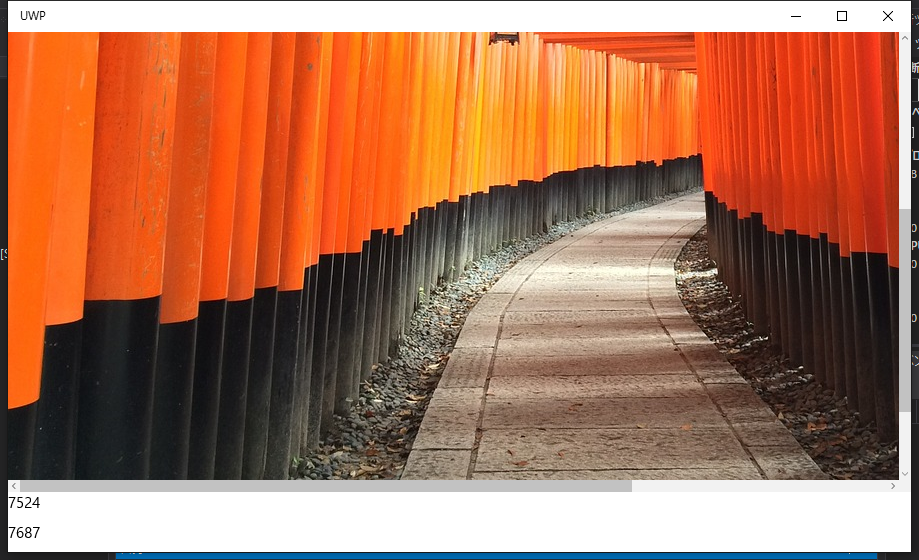

仕事で UWP のソフトを開発しています。そもそも WPF もそこまで経験ないのに、UWPとか無茶ぶりです。
UWP、というか WinRT 使っているとWPFでできたことができないことが多々あります。
Problem
EventTriggerAction というのがあります。
XAML側で ViewModel で定義されたメソッドをイベントと結び付けたりできます。
で、何が問題、というか結び付ける対象となるイベントに制限があります。
どうも、ルーティングイベント以外を対象にすると、下記のメッセージを含む例外を投げて実行時にクラッシュします。
System.InvalidOperationException: Adding or removing event handlers dynamically is not supported on WinRT events. at System.Reflection.EventInfo.AddEventHandler(Object target, Delegate handler) この現象、WPFでは発生しません。
Debugだけ？
ところが、不思議なことにReleaseビルドで実行すると、クラッシュはおろか、正しく動作します。
概要は下記のソースをみるとわかるかと。
スクロールバーを動かすと画面下部のTextBlockに乱数の値が表示されます。
ViewModel (ポータブル クラス ライブラリ)
1 | using Microsoft.Practices.Prism.Mvvm; |
MainWindow.xaml (UWP)
1 | <Page x:Class="UWP.MainPage" xmlns="http://schemas.microsoft.com/winfx/2006/xaml/presentation" xmlns:x="http://schemas.microsoft.com/winfx/2006/xaml" xmlns:d="http://schemas.microsoft.com/expression/blend/2008" xmlns:mc="http://schemas.openxmlformats.org/markup-compatibility/2006" xmlns:viewModels="using:Shared.ViewModels" xmlns:interactivity="using:Microsoft.Xaml.Interactivity" xmlns:core="using:Microsoft.Xaml.Interactions.Core" mc:Ignorable="d"> |
MainWindow.xaml (WPF)
1 | <Window x:Class="WPF.MainWindow" xmlns="http://schemas.microsoft.com/winfx/2006/xaml/presentation" xmlns:x="http://schemas.microsoft.com/winfx/2006/xaml" xmlns:d="http://schemas.microsoft.com/expression/blend/2008" xmlns:ei="http://schemas.microsoft.com/expression/2010/interactions" xmlns:i="http://schemas.microsoft.com/expression/2010/interactivity" xmlns:mc="http://schemas.openxmlformats.org/markup-compatibility/2006" xmlns:viewModels1="clr-namespace:Shared.ViewModels;assembly=Shared" Title="MainWindow" Width="525" Height="350" mc:Ignorable="d"> |
実行画面 (UWP Release Build) 
{kind=link}
Conclusion
原因は不明です。
仕方がないので、仕事ではコードビハインドにイベントハンドラを記述しています。